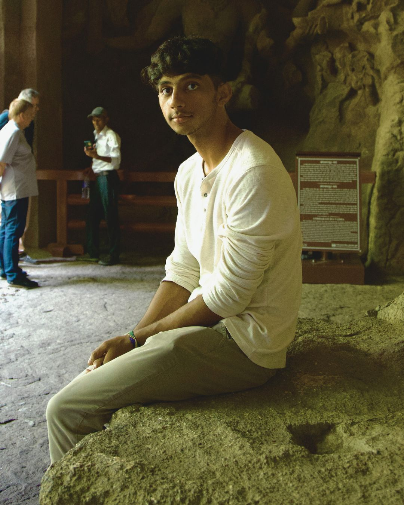

naman anshumaan
I am a second-year undergraduate student at Ashoka University, pursuing an
interdisciplinary major in Computer Science and Entrepreneurship with a minor
in Psychology. I was born and raised in Patna, completed high school in Trivandrum,
before moving to Delhi for college.
My main interests lie in business analytics and the intersection of technology and human
behavior. I love experimenting and dabbling in new hobbies: be it writing blogs, picking
up courses in subjects like Media Studies, or learning calisthenics. I consider myself to
be a lifelong learner, and treat life as such.
While I am proficient in softwares like Adobe Premiere Pro, Photoshop, and Audacity, I am
also teaching myself new ones like Blender and GarageBand. I also like listening to a wide
variety of music and profess to be a die-hard hip-hop and rap aficionado.
I am also part of the college tennis team, and have been playing for a decade or so. I am a
fitness enthusiast who loves travelling and finding new places to perform pushups and pullups.
That is about me, and this is what most of my blogs will be about.
